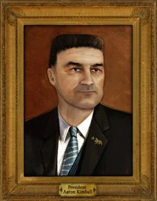
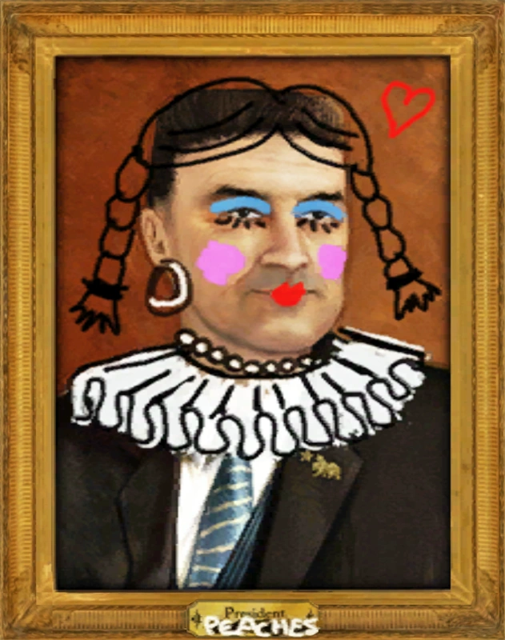
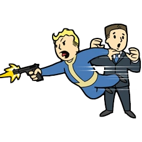
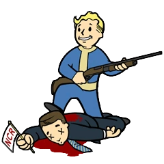

Aaron Kimball (アーロン・キンボール)
―― アーロン・キンボール
アーロン・キンボール (Aaron Kimball) は、2281年時点における 新カリフォルニア共和国 (New California Republic / NCR) の現職大統領です。彼は元 NCR 軍の将軍であり、軍人としての経歴とポピュリズム的な魅力、そして強硬な拡張主義政策によって権力の座に就きました。
背景
軍人としての台頭
キンボールは政治家になる前、NCR 軍の将軍としてその名を馳せました。彼は「モハビの平定」と呼ばれる一連の軍事キャンペーンを指揮し、ブルヘッド・シティ周辺で活動していた部族たちを相手に苛烈な作戦を展開しました。このキャンペーンは、NCR 市民の間で彼の評価を高め、戦争の英雄としての地位を確立させました。
政界への進出
軍を退役した後、キンボールは政治の世界に入りました。彼は当時のウェンデル・ピーターソン大統領の穏健な政策を批判し、より攻撃的で拡張主義的なアジェンダを掲げました。モハビでの軍事的成功を背景に、彼はピーターソンを破って大統領に当選しました。彼の当選は、NCR の方針が外交と安定から、軍事力による領土拡大と帝国主義へと転換したことを象徴していました。
大統領職とモハビ・キャンペーン
大統領として、キンボールは モハビ・ウェイストランド の併合を最優先事項としました。彼はこの地域を NCR の第6の州にすることを公約し、フーバーダムの電力と水を確保するために莫大な資源と人員を投入しました。 しかし、彼の政策は多くの批判に晒されています。長引く シーザー・リージョンとの戦争、ミスター・ハウスとの不安定な「ニューベガス条約」、そして B.O.S. との紛争（オペレーション：サンバースト）は、共和国の経済を圧迫し、国民に重税と徴兵を強いることになりました。特に、富裕なバラモン男爵や農業王たちとの癒着は、一般市民の間で腐敗の象徴と見なされています。
フーバーダムへの訪問
2281年、第2次フーバーダムの戦いが迫る中、キンボールは兵士たちの士気を高めるために フーバーダム を訪問する計画を立てました。この訪問は シーザー・リージョン にとって格好の標的となり、彼らは大統領暗殺計画を企てました。
性格と特徴
キンボールはカリスマ性のある演説家であり、愛国心に訴えかけるレトリックを得意としています。しかし、その裏には冷徹な実利主義と、目的のためには手段を選ばない強引さがあります。彼は タンディのような理想主義的な指導者とは対照的に、軍事力と経済力を背景とした支配を志向しています。彼は、部下であるリー・オリバー将軍と密接な関係にあり、ハンロンのような古参のレンジャーや穏健派とは対立しています。
プレイヤーキャラクターとの関わり
NCR ルート / ハウス / イエスマン ルート
クエスト「You'll Know It When It Happens」において、プレイヤーはキンボール大統領の護衛を任されます。シーザー・リージョン の暗殺者は、大統領専用機「ベア・フォース・ワン 」への爆弾設置、スナイパーによる狙撃、あるいは群衆に紛れたエンジニアによるナイフ攻撃など、複数の手段で命を狙ってきます。プレイヤーはこれらの脅威を排除し、彼が無事に演説を終えて離陸するまで守り抜かなければなりません。
リージョン ルート
クエスト「Arizona Killer」において、プレイヤーは逆にキンボール大統領を暗殺する任務を負います。プレイヤーは NCR の制服に変装して警備網を突破し、スナイパーライフルでの狙撃、ベルチバードへの爆弾設置、対空砲のハッキング、あるいは至近距離での爆発物使用など、様々な方法で彼を殺害することができます。
運命
彼の運命はプレイヤーの行動に委ねられています。 暗殺が成功した場合、NCR 軍の士気は崩壊し、リージョンにとって大きな有利となります。 彼が生き残った場合でも、もし NCR がダムの戦いで敗北すれば、彼は敗戦の責任を問われ、失脚するか、あるいは自殺することを示唆するエンディングも存在します。 NCR が勝利した場合、彼は英雄としての地位を保ちますが、その拡張主義的な政策は継続され、共和国の負担は増し続けることになります。
所持品
- キンボールのスーツ
- レンジャー・セコイア（装備している場合がありますが、通常は護衛が持っています）
注記
彼の大統領専用ベルチバード「ベア・フォース・ワン」という名前は、現実のアメリカ大統領専用機「エアフォースワン」と、NCR の象徴である熊 (Bear) をかけた言葉遊びです。
アーロン・キンボールは、NCR という国家が直面している「帝国のジレンマ」を体現するキャラクターです。
英雄か、独裁者か: かつての戦争の英雄が、権力を握った途端に国民を疲弊させる終わりのない戦争へと駆り立てる姿は、歴史上繰り返されてきた指導者の転落劇を彷彿とさせます。彼に対する評価が、NCR 市民の間でも真っ二つに分かれている点がリアルです。
暗殺イベントの緊張感: ゲーム内での彼の登場シーンは短いですが、その瞬間に複数の暗殺計画が同時進行しているというシチュエーションは、プレイヤーに極度の緊張感と、それを阻止（あるいは実行）した時の達成感を与えてくれます。
タンディとの対比: 偉大な母であるタンディが「統合と安定」の象徴だとすれば、キンボールは「拡大と腐敗」の象徴として描かれています。彼の存在は、プレイヤーに「NCR は本当に救う価値があるのか？」という問いを突きつけてきます。
This article uses material from the Fallout wiki at Fandom and is licensed under the Creative Commons Attribution-Share Alike License.